在Python中利用Monocle3进行轨迹分析
原文：https://mp.weixin.qq.com/s?__biz=MzAwMzIzOTk5OQ==&mid=2247538758&idx=3&sn=e3d67a5cb8b9f49ac544b9222b2df019&chksm=9b3c2116ac4ba800f758a9e0856fa20d8aac599c4fc55c122ebda0488871e8ccdf9ba0651ed2#rd 合集：单细胞教程全收录
本推文沿着 monocle3-python 仓库下的 tutorials/c_elegans_embryo_v2.ipynb, 把 C. elegans 早期胚胎 scRNA-seq 数据的整套 Monocle3 轨迹分析在 Python 上重做一遍。每一步先讲算法在算什么 —— size factor、SimplePPT 主图、pseudotime、graph_test 用的 Moran's I —— 再贴上 monocle3-python (当前 PyPI 版本 1.4.26.post1) 的 API 调用。
总览
monocle3-python 是cole-trapnell-lab/monocle3的 AnnData 重写版本。整套 port 的设计目标是逐 step 保留 Rmonocle3的编排顺序与数值行为, 同时把 R 的cell_data_set(继承自SingleCellExperiment的 S4 容器) 整个替换成anndata.AnnData, 把 UMAP、Leiden、MNN、GLM 这些非 monocle3-specific 的算法全部下放给scverse生态: UMAP 走umap-learn, Leiden 走leidenalg, kNN 走annoy/pynndescent/hnswlib, GLM 走statsmodels, MNN 用 port 自带的纯 Pythonreduced_mnn(monocle3/_batchelor.py是 Rbatchelor::reducedMNN的逐行翻译)。可视化栈走的是 Bio-Babel 同期出的ggplot2_py/pheatmap-python/ggrepel-python/scales-python。
整套 port 最值得展开的地方是 SimplePPT 主图学习: Monocle3 论文里的核心算法在 monocle3/learn_graph.py 里被逐行翻译, 是后面 order_cells 拿到 pseudotime 的几何基础。下面我们按 spine notebook 走一遍, 完整地把这段流水线跑出来。
加载 Packer 胚胎数据
load_packer_embryo() 把 Packer 早期 C. elegans 胚胎 scRNA-seq 数据缓存到~/.cache/monocle3-python/packer_embryo.h5ad并返回AnnData对象, shape 是 (6188, 20222) —— 6188 个细胞 × 20222 个基因。obs里有几列后面会反复用到:time.point(胚胎采样时间点)、embryo.time(连续时间)、embryo.time.bin(粗分箱, 文章后面用'130-170'作为最早时段的 root)、batch、cell.type(Packer 团队给的 ground-truth 注释), 以及bg.300.loading、bg.400.loading、bg.500.1.loading、bg.500.2.loading、bg.r17.loading、bg.b01.loading、bg.b02.loading 这 7 个 loading-background 协变量, 它们是 R vignette 里用于 residual model 的输入。
import numpy as np
import pandas as pd
import ggplot2_py as gg
import monocle3 as m3
print('monocle3-python', m3.__version__)
adata = m3.load_packer_embryo()
adata
size factor + truncated PCA: preprocess_cds
preprocess_cds 做两件事: 一是把每个细胞的 size factor 写到obs['Size_Factor'], 二是在 size-factor-normalized 矩阵上跑一个截断 SVD 把 cells × genes 投到一个num_dim维的子空间里。size factor 用的是 Rmonocle3的默认mean-geometric-mean-total: 对每个细胞算总 UMI 计数t_i, 然后s_i = t_i / exp(mean(log(t_i)))—— 一个让所有细胞总量乘以1/s_i之后处在相同尺度上的几何均值归一化。Norm 默认log, 即对X / s_i做log1p。
PCA 走的是 sparse_prcomp (monocle3/preprocess.py:312), 这是 R irlba::sparse_prcomp_irlba 的功能等价物。关键点在中心化: 直接对稀疏矩阵减去列均值会把它 densify 掉, 因此 port 在大稀疏矩阵情况下用 scipy.sparse.linalg.svds 配合一个 LinearOperator 实现"隐式中心化" —— matvec(v) = X @ (v/std) - col_mean @ (v/std)、rmatvec(u) = (X.T @ u - col_mean * u.sum()) / std —— 这样既能拿到 PCA 等价结果, 又不展开矩阵。小问题 (n_rows * n_cols < 5e6) 直接走 numpy.linalg.svd 的稠密路径换取确定性。整段在调用 SVD 前显式 np.random.seed(2016), 跟 R 的 set.seed(2016) 对齐。
m3.preprocess_cds(adata, num_dim=50)
执行后 adata.obsm['X_pca'] 会拿到 (6188, 50) 的 PCA 坐标, 拟合细节 (SVD 旋转矩阵、奇异值、列均值、列标准差、解释方差比例、被保留的基因列表) 写到 adata.uns['monocle3']['preprocess']['PCA'], 后面 find_gene_modules 算 gene loading 就要去这里拿。
residual subtraction + reducedMNN: align_cds
胚胎 scRNA-seq 在做完 PCA 之后, 还要剥掉两类不感兴趣的差异: (a) 几个 loading-background 协变量带来的连续效应 (溶酶体污染等), (b) 不同建库批次间的离散偏移 (batch 列)。align_cds 把这两件事顺序做一遍。
(a) 走 patsy + OLS。给一个 R 风格的 formula ~ bg.300.loading + ... + bg.b02.loading, port 在 align_cds 内部调 patsy.dmatrix 构造 design matrix, 用 np.linalg.lstsq 一把求出系数 β, 然后把非 intercept 列对应的 β 乘回 design matrix 再从 PC 坐标里减掉 —— 残差化, 但只减线性效应, 不引入非线性 (monocle3/alignment.py:35)。
(b) 走 _batchelor.reduced_mnn, 这是 R batchelor::reducedMNN 限定在 monocle3 调用形态下的纯 Python 翻译: k=alignment_k (默认 20), ndist=3, sequential merge order, KmknnParam-style 精确 kNN。两个 batch 之间找互最近邻 (mutual nearest neighbors), 在 MNN 对上估计偏移向量, 用 tricube 加权把全部细胞拉到对齐空间, 写出 adata.obsm['X_aligned']。
m3.preprocess_cds(adata, num_dim=50)
m3.align_cds(
adata,
residual_model_formula_str=(
'~ bg.300.loading + bg.400.loading + bg.500.1.loading + '
'bg.500.2.loading + bg.r17.loading + bg.b01.loading + bg.b02.loading'
),
alignment_group='batch',
)
注意 preprocess_cds 在这里被重新调用 —— 为了 spine notebook 的代码块严格可复制, 第一个 cell 留着, 第二个 cell 把它和 align_cds 一起重跑一遍是 notebook 原貌, 实际生产里只跑第二段就够。
UMAP: reduce_dimension
reduce_dimension 默认从X_aligned(若存在, 否则X_pca) 取出坐标, 跑 UMAP 投到 2D。后端是umap-learn, 但 port 默认umap_nn_method='annoy'—— 这条路径下 monocle3-python 不让umap-learn自己建 kNN 图, 而是用真正的annoy库严格按 Ruwot的参数 (n_trees=50,search_k = 2 * n_neighbors * n_trees) 预算 kNN, 把(indices, distances)通过umap.UMAP(precomputed_knn=...)喂进去 (monocle3/reduce_dimensions.py:258)。对cosine距离还要把 annoy 的 "angular" 距离 (sqrt(2*(1-cos))) 平方再除以 2, 转回umap-learn内部期望的1 - cos度量 —— 这样数值结果和 R uwot 才能逐 batch 对上。random_state=2016,transform_seed=2016, 单线程 (cores=1) 下可复现;cores>1 时会显式 warn umap-learn 的并行 SGD 不确定性。
np.random.seed(42)
m3.reduce_dimension(adata, cores=1)
m3.plot_cells(adata, label_groups_by_cluster=False, color_cells_by='cell.type')
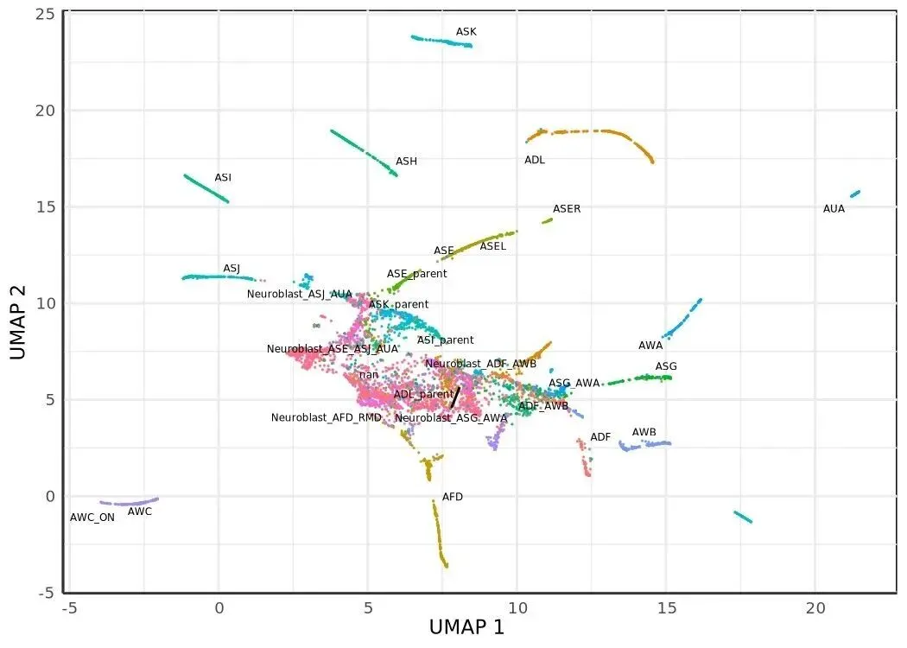
按 Packer 给的 cell.type 上色, 能直接看到胚层之间的连续过渡, 这是后面 SimplePPT 要在上面铺 principal graph 的底图。
Jaccard-Leiden 聚类: cluster_cells
聚类的算法直觉是: 在 UMAP 坐标上建 kNN, 把每条边的权重换成两端节点 kNN 集合的 Jaccard 相似度, 然后在这张加权图上跑 Leiden。具体实现里, _make_knn_graph先调nearest_neighbors.search_nn_matrix拿 (k+1) 邻居, 把 self 那一列换到第 0 列以匹配 R 的swap_nn_row_index_point, 再通过_clustering_cpp.jaccard_coeff算所有边的 Jaccard 系数, 输出一张igraph.Graph(monocle3/cluster_cells.py:38)。Leiden 走leidenalg.find_partition, 默认CPMVertexPartition,resolution_parameter=resolution。注意 Rmonocle3默认resolution=0.0001, 但 Packer 胚胎数据需要更稀疏的 cluster, 因此 spine notebook 这里手动调成5e-6。
聚类得到 cluster 之后, 还要进一步把"显著连接的 cluster"合并成 partition , 这是 Monocle3 v3 的特色 (R monocle3 v2 没这一步)。_compute_partitions (monocle3/cluster_cells.py:177) 在 cluster-cluster 邻接矩阵上做 PAGA 风格的二项检验: M.T @ A @ M 拿到每对 cluster 间的真实边数, 与 null 模型 (按节点度分布期望的边数) 比较得到 z-score 和 p-value, Holm step-down 校正, 切掉 q > 0.05 的边, 剩下的连通分量就是 partition。partition 在 learn_graph 阶段会被当作"独立轨迹子图"的边界用。
m3.cluster_cells(adata, resolution=5e-6)
m3.plot_cells(adata, group_cells_by='partition', color_cells_by='partition')
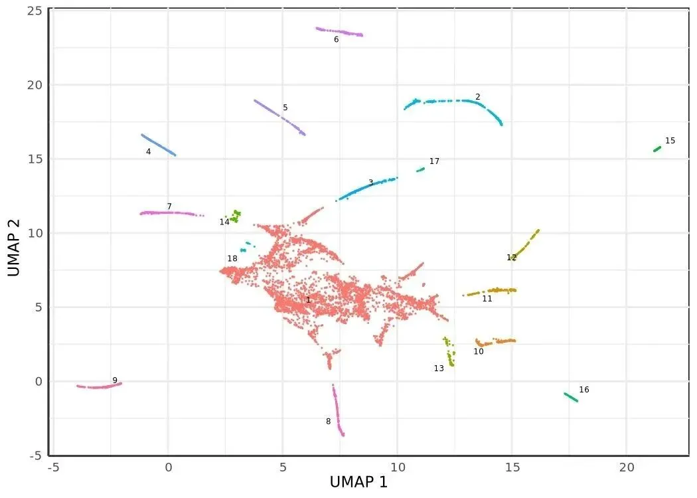
在这个 resolution 下整套数据落到一个 partition 里, 后面学到的 principal graph 也就是单连通的一棵树 (允许有环)。
SimplePPT 主图: learn_graph
这一步是整篇文章最值得展开的地方。learn_graph 在每个 partition 内部独立学一张 principal graph , 形态上是一棵带可选环的无向图, 顶点是 K 个学习得到的 centroid, 边是它们之间的 MST。算法名叫 SimplePPT (Simple Principal Tree), 来自 reversed graph embedding 思想: 一边让 centroid 之间的总图距 (MST 边权和) 尽可能小, 一边让原始细胞与 centroid 的软分配距离尽可能小, 这两项加权求和构成目标函数, 在 centroid 上做交替优化。
monocle3-python 把这件事拆成四块, 全在 monocle3/learn_graph.py 里:
初始化 : _kmeans_with_init 等距采样 K 个初始点 + k-means 聚到 K 个 cluster (learn_graph.py:141), 然后在每个 cluster 内取局部密度最高的点作为 medoid —— 密度估计是 rho = exp(-mean kNN distance), kNN 用的是 annoy (learn_graph.py:723-768)。K 的默认值来自启发式 n_clusters * 15 * log10(n_cells), 但 spine notebook 这里强制 ncenter=1000 以匹配 R vignette (R 的默认对胚胎数据偏粗)。
SimplePPT 迭代 (_calc_principal_graph, learn_graph.py:77): 在 K 个 centroid 上交替三步, 直到目标函数相对变化 < eps=1e-5:
- MST : 对 centroid 配对欧式距离矩阵 Φ 跑最小生成树 (
igraph.Graph.Weighted_Adjacency+spanning_tree); - Soft assignment : 对每个细胞 i 和每个 centroid k,
P_ik ∝ exp(-‖x_i - C_k‖² / σ), 行归一化为分布 (L1_sigma默认 0.01); - 闭式重心更新 : 解线性方程
(2 (diag(W·1) - W) + γ diag(P.T·1)) C.T = γ X P得到下一轮 centroid (L1_gamma默认 0.5)。
Loop closure (_connect_tips, learn_graph.py:516): 默认 close_loop=True。算每个度为 1 的 tip 在细胞 kNN 图上的 PAGA q-value 矩阵, 同时算 tip-tip 间的 geodesic / euclidean 距离比。如果两个 tip 满足 q < 0.05 + geodesic ≥ (1/3) * diameter + euclidean ≤ 1 * max_edge, 就在它们之间加一条边 —— 这是把 MST 的 acyclic 约束打破, 允许 trajectory 形成环 (例如细胞周期)。
Prune (_prune_tree, learn_graph.py:584): 默认 prune_graph=True。从一个度为 2 的 root 跑 BFS, 检查每个非树干分支的长度, 长度 < minimal_branch_len=10 就整支砍掉, 防止 noise tips 干扰下游 pseudotime。
最后 _project2mst (learn_graph.py:245) 把每个细胞投影到最近的 MST 边上, 构造一张 cell-augmented graph —— 顶点既有 centroid (Y_1、Y_2、...) 又有细胞名, 边按"沿 MST 边距离 source centroid 远近"排序后串起来。这张增广图就是下一步 order_cells 算 pseudotime 用的 igraph。
m3.learn_graph(adata, learn_graph_control={'ncenter': 1000})
m3.plot_cells(
adata, color_cells_by='cell.type',
label_groups_by_cluster=False,
label_leaves=False, label_branch_points=False,
)
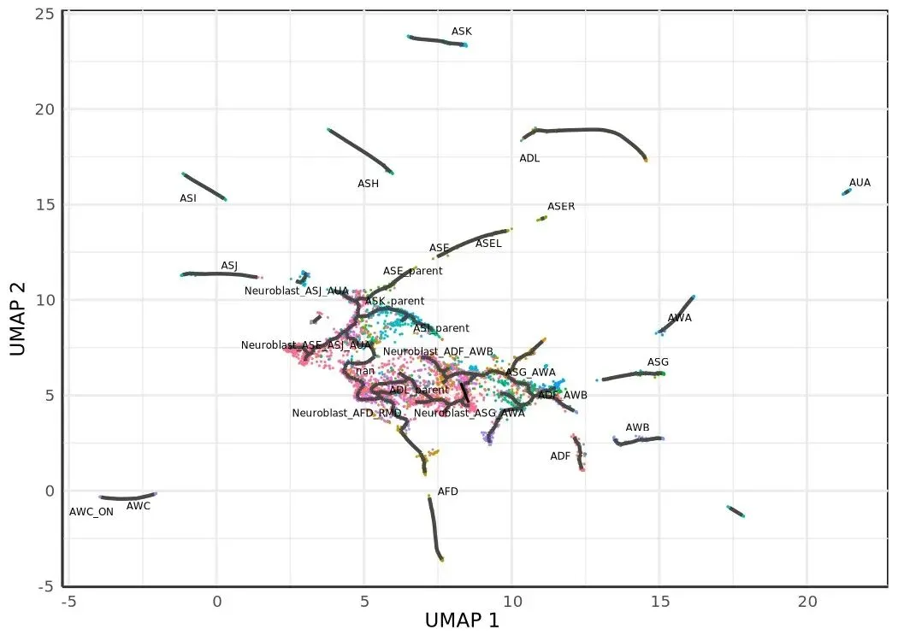
m3.plot_cells(
adata, color_cells_by='embryo.time.bin',
label_cell_groups=False,
label_leaves=True, label_branch_points=True,
graph_label_size=1.5,
)
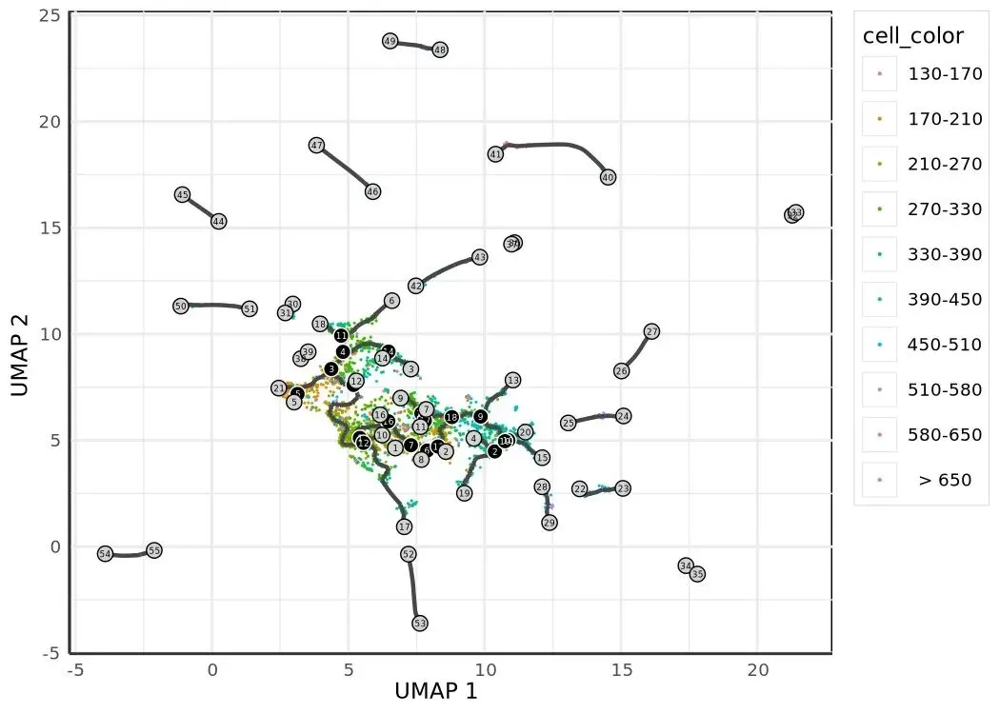
第二张图上标出了所有 leaf (终端 cell type) 和 branch point (命运分歧节点), 黑色折线段就是学到的 principal graph。配合 embryo.time.bin 的颜色, 能直接看出"早期时段聚集在中间, 沿着分支向 leaf 推进"的 trajectory 形状, 这就是接下来要量化的 pseudotime 走向。
pseudotime: order_cells
有了 cell-augmented graph 之后, pseudotime 就是一个最短路径问题: 给一个或多个 root 节点, 算每个细胞在这张加权图上到 root 集合的最短路径距离, 多 root 取 min。
spine notebook 这里用的 root 选择策略是"最早时段细胞密度最大的 centroid"。earliest_principal_node 读 adata.uns['monocle3']['principal_graph_aux']['UMAP']['pr_graph_cell_proj_closest_vertex'] 拿到每个细胞最近的 centroid (V1 列, 1-based ID), 在 embryo.time.bin == '130-170' 的子集里数频次, 最高的那个 Y_k 就是 root。这条策略比 R vignette 的 "interactive shiny picker" 严格 —— port 没移植 shiny, 强制用户给 root_pr_nodes 或 root_cells, 反而更适合做可复现实验。
def earliest_principal_node(adata, time_bin='130-170'):
mask = adata.obs['embryo.time.bin'].astype(str) == time_bin
closest = adata.uns['monocle3']['principal_graph_aux']['UMAP'][
'pr_graph_cell_proj_closest_vertex'
]['V1'].to_numpy()
closest_subset = closest[mask.to_numpy()]
values, counts = np.unique(closest_subset, return_counts=True)
return [f'Y_{int(values[np.argmax(counts)])}']
m3.order_cells(adata, root_pr_nodes=earliest_principal_node(adata))
m3.plot_cells(
adata, color_cells_by='pseudotime',
label_cell_groups=False,
label_leaves=False, label_branch_points=False,
graph_label_size=1.5,
)
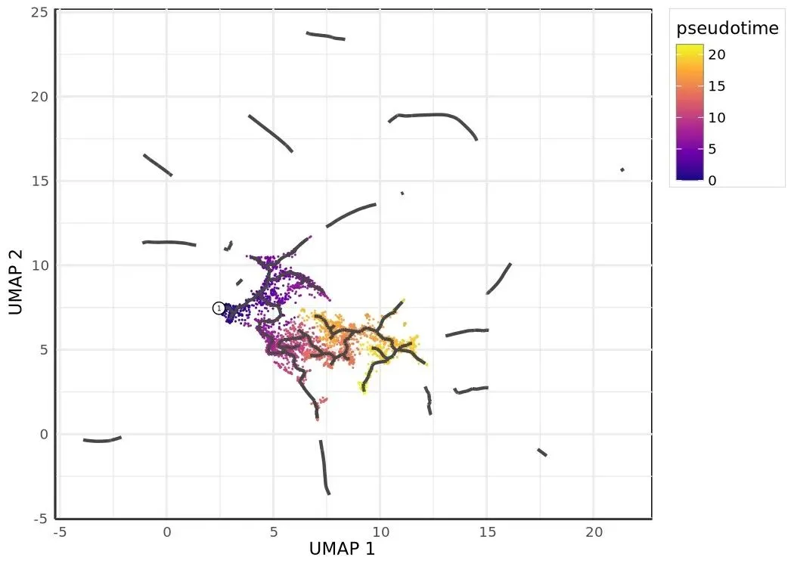
order_cells 内部对每个 root Y_k 找到 UMAP 空间里最近的实际细胞, 把这些细胞作为 source, 在 pr_graph_cell_proj_tree 上调 igraph.distances(weights='weight') 算所有节点 (centroid + cell) 到 source 的最短路径, pseudotime 写到 obs['monocle3_pseudotime']。一个值得知道的坑: 如果 use_partition=True (默认), 每个 partition 的 principal graph 是断开的, 不在 root 所在 partition 里的细胞会拿到 inf。这种情况下 port 会显式 UserWarning 提示用 use_partition=False 或者每个 partition 都给一个 root (order_cells.py:156-172)。我们这里只有一个 partition, 所以不会触发。
轨迹上的 marker panel
有了 pseudotime 和 principal graph, 下一步就是把 marker 基因在轨迹上的表达模式叠加上来。plot_cells(genes=...) 支持一次画多个基因, 每个基因占一个 panel, 颜色是 log-normalized 表达量 (min_expr=0.1 控制截断阈值)。
ciliated_genes = ['che-1', 'hlh-17', 'nhr-6', 'dmd-6', 'ceh-36', 'ham-1']
m3.plot_cells(
adata, genes=ciliated_genes,
label_cell_groups=False, show_trajectory_graph=False,
)
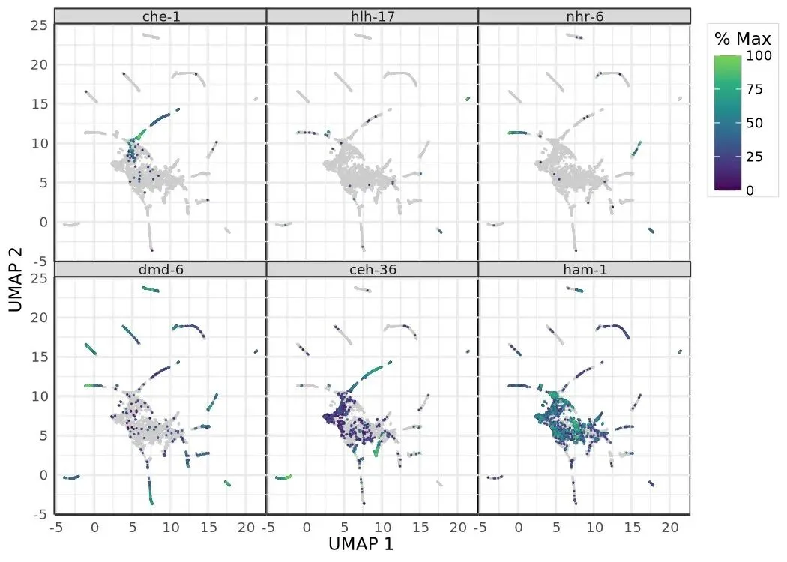
plot_percent_cells_positive 把每个时间点上 marker 阳性 (X > min_expr) 的细胞比例画成 barplot, 比直接看表达均值更稳健 —— 在 dropout 严重的 scRNA-seq 数据上, "几个细胞高表达 vs 多数细胞低表达"的差异往往比均值更有生物学意义。
gene_mask = adata.var['gene_short_name'].astype(str).isin(ciliated_genes)
(
m3.plot_percent_cells_positive(
adata[:, gene_mask].copy(),
group_cells_by='time.point',
)
+ gg.theme(
axis_text_x=gg.element_text(angle=45, hjust=1),
legend_position='none',
)
)
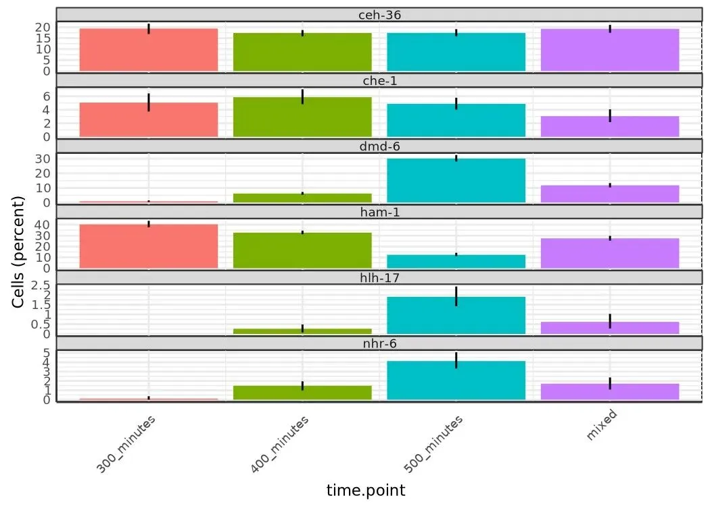
per-gene GLM 差异表达: fit_models
fit_models 对每个基因独立拟合一个 GLM, 默认 expression_family='quasipoisson', 对应 statsmodels.GLM(family=Poisson(), offset=log(Size_Factor)) 加 post-fit dispersion 估计 (monocle3/expr_models.py)。把 Size_Factor 当 offset 而不是把表达量除以 SF, 是 count-based GLM 的标准做法: 它让模型在 count scale 上工作, 保留 mean-variance 关系。
R monocle3 暴露了 quasipoisson (默认)、poisson、gaussian、binomial、negbinomial、zipoisson、zinegbinomial, port 全部对接到对应的 statsmodels 接口 (NB 和 ZINB 走 statsmodels.discrete.count_model.NegativeBinomial / ZeroInflatedNegativeBinomialP)。mixed-negbinomial 在 port 里抛 NotImplementedError —— R 用的 lme4 glmer 还没有等价的 statsmodels 接口。
下面四段代码展示了 fit_models 的几种典型用法: 单变量 (~ embryo.time)、加协变量 (~ embryo.time + batch)、似然比检验对比模型 (compare_models)、用 spline 拟合非线性趋势 (~ splines::ns(pseudotime, df=3))。
adata.obs['pseudotime'] = m3.pseudotime(adata)
sub = adata[:, gene_mask].copy()
gene_fits_time = m3.fit_models(sub, model_formula_str='~embryo.time')
fit_coefs = m3.coefficient_table(gene_fits_time)
(
fit_coefs
.query("term in ('embryo.time', 'embryo_time')")
.query('q_value < 0.05')
[['gene_short_name', 'term', 'q_value', 'estimate']]
)
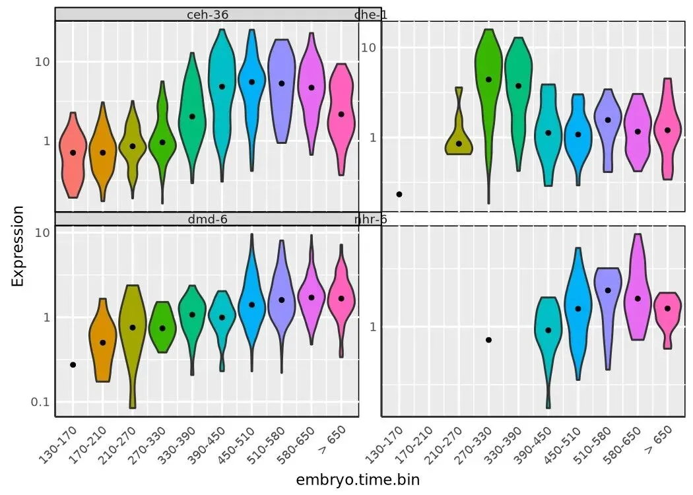
violin_mask = adata.var['gene_short_name'].astype(str).isin(
['che-1', 'nhr-6', 'dmd-6', 'ceh-36']
)
(
m3.plot_genes_violin(
adata[:, violin_mask].copy(),
group_cells_by='embryo.time.bin', ncol=2,
)
+ gg.theme(axis_text_x=gg.element_text(angle=45, hjust=1))
)
gene_fits_batch = m3.fit_models(sub, model_formula_str='~embryo.time + batch')
m3.coefficient_table(gene_fits_batch) \
.query("term not in ('Intercept', '(Intercept)')") \
[['gene_short_name', 'term', 'q_value', 'estimate']]
m3.evaluate_fits(gene_fits_batch)
time_models = m3.fit_models(
sub, model_formula_str='~embryo.time', expression_family='negbinomial'
)
time_batch_models = m3.fit_models(
sub, model_formula_str='~embryo.time + batch', expression_family='negbinomial'
)
m3.compare_models(time_batch_models, time_models)[['gene_id', 'q_value']]
finite = np.isfinite(adata.obs['pseudotime'].to_numpy())
sub_pt = adata[finite][:, gene_mask].copy()
gene_fits_pt = m3.fit_models(
sub_pt,
model_formula_str='~splines::ns(pseudotime, df=3)',
)
(
m3.coefficient_table(gene_fits_pt)
.loc[lambda d: d['term'].str.contains('pseudotime')]
.assign(q_value=lambda d: d['q_value'].fillna(1.0))
.query('q_value < 0.05')
[['gene_short_name', 'term', 'q_value', 'estimate']]
)
coefficient_table 出 broom 风格的 tidy 表 (每行一个(gene, term)对),evaluate_fits出每个基因的r_squared/df/logLik/status,compare_models用 chi-square 检验做嵌套模型的似然比检验。注意~ splines::ns(pseudotime, df=3)这种 R 风格的函数调用 formula 是被patsy 透传识别的, df=3 的 natural cubic spline 把 pseudotime 拆成三段单调可微的曲线, 能拟合"先升后降"或"S 形累积"这类典型基因表达动态。
主图驱动的差异表达: graph_test + gene modules
到这里为止的 DE 都是"基因在某个外部变量 (time, pseudotime, batch) 上的响应"。Monocle3 v3 引入了一种新的视角: 把整张 principal graph 当成空间结构, 问"哪些基因的表达在这张图上有空间自相关", 也就是 Moran's I 。直觉是: 一个基因如果在轨迹上每个区域随机分布, Moran's I 接近 0; 如果它在某个 lineage 上集中表达 (邻接细胞表达值相似), Moran's I 显著大于 0。
graph_test(neighbor_graph='principal_graph') 的精彩之处在邻接图怎么造 (monocle3/graph_test.py:207): 它不直接用 UMAP 上的 kNN, 而是先算 kNN 的 Jaccard 边权, 再造一个"细胞 → 最近 centroid"的 indicator 矩阵 M, 用 M @ (principal_g + I) @ M.T 得到 feasibility mask —— 只有"两个细胞各自最近的 centroid 在 principal graph 上相邻 (或就是同一个)"的细胞对才保留, 其他全部置零。这样得到的邻接图把"轨迹相邻"的几何约束硬编码进了空间自相关的定义里, 比直接在 UMAP 上算 Moran's I 更能反映 trajectory 上的表达模式。
Moran's I 本身的方差公式是 R spdep 的标准写法, port 在 _moran_per_row (graph_test.py:50) 里逐项实现, BH 校正出 q-value。
pr_graph_test_res = m3.graph_test(adata, neighbor_graph='principal_graph', cores=4)
pr_deg_ids = pr_graph_test_res.query('q_value < 0.05').index.tolist()
gene_module_df = m3.find_gene_modules(adata[:, pr_deg_ids].copy(), resolution=1e-3)
cell_group_df = pd.DataFrame({
'cell': adata.obs_names,
'cell_group': adata.obs['cell.type'].astype(str).to_numpy(),
})
agg_mat = m3.aggregate_gene_expression(
adata,
gene_group_df=gene_module_df[['id', 'module']],
cell_group_df=cell_group_df,
)
agg_mat.index = ['Module ' + str(i) for i in agg_mat.index]
import pheatmap
pheatmap.pheatmap(
agg_mat, scale='column', clustering_method='ward.D2', fontsize=6,
)
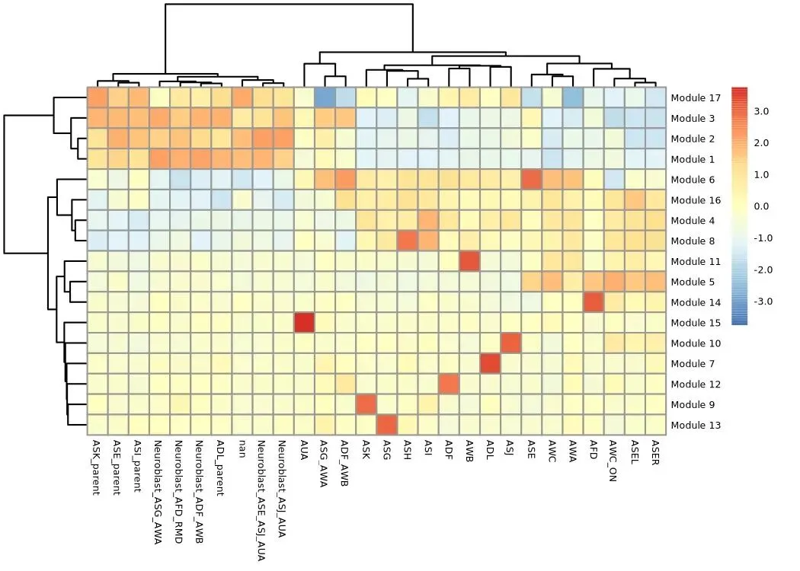
find_gene_modules 把 graph_test 选出来的显著基因 (q < 0.05) 在 PCA loading 空间 (SVD.v @ diag(SVD.sdev)) 上跑一遍 UMAP, 然后跑 Leiden 聚类, 得到 (gene_id, module) 表 (monocle3/cluster_genes.py:97)。aggregate_gene_expression 把它和 cell_group_df (这里按 cell.type 分组) 一起做成 module × cell_type 的 z-score 矩阵, 喂给 pheatmap 画出 module 在不同细胞类型上的特异性 —— 这就是 Monocle3 论文里那张著名的"细胞类型 × 基因模块"热图。
m3.plot_cells(adata, genes=gene_module_df, label_cell_groups=False, show_trajectory_graph=False)
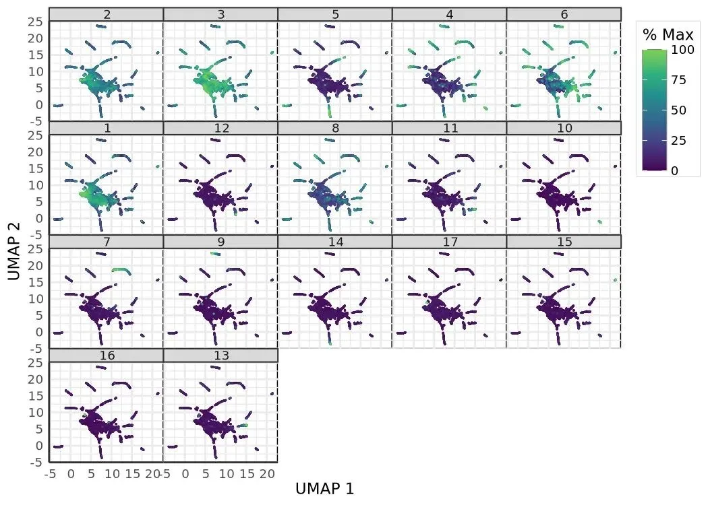
把 gene_module_df 直接传给 plot_cells(genes=...), 就能在 UMAP 上每个 module 一个 panel 把"哪些细胞 module-X 整体高表达"可视化出来, 是 module 解读最直观的视图。
AFD lineage 的 pseudotime 表达曲线
最后看一段沿着 pseudotime 的基因动态。R vignette 这里 hardcode 了 cluster IDs 22 / 28 / 35 三个 AFD 神经元相关 cluster, 但 port 里 Leiden 给出的 cluster 编号不一定能对上, spine notebook 用一个更稳健的策略: 取细胞数最多的前三个 cluster 当 AFD 代理子集, 然后在 AFD 子集上画 gcy-8 / dac-1 / oig-8 三个标志基因沿 pseudotime 的曲线。
cluster_counts = m3.clusters(adata).value_counts()
top_clusters = cluster_counts.head(3).index.tolist()
afd_mask = m3.clusters(adata).isin(top_clusters)
afd_cds = adata[afd_mask.to_numpy()].copy()
afd_genes_mask = afd_cds.var['gene_short_name'].astype(str).isin(
['gcy-8', 'dac-1', 'oig-8']
)
m3.plot_genes_in_pseudotime(
afd_cds[:, afd_genes_mask].copy(),
color_cells_by='embryo.time.bin',
min_expr=0.5,
)
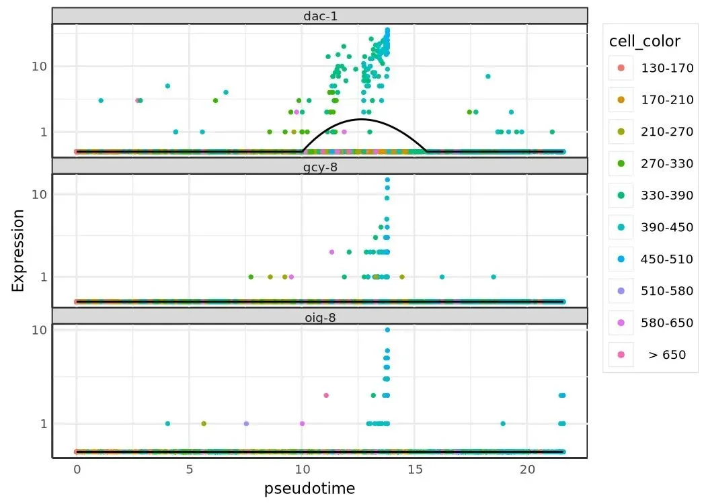
plot_genes_in_pseudotime 内部对每个基因在 pseudotime 上拟合一条平滑曲线 (loess 或 spline, 看参数), 把表达 (> min_expr 的细胞) 按 pseudotime 排开画 scatter + 拟合曲线。从这张图能直接读到"这个 marker 在 AFD lineage 上是早期高、晚期消失, 还是反过来"的时间走向, 是把 trajectory 落回到具体基因的最后一步。
收尾
我们把 spine notebook 的 11 个核心 step 全部走了一遍: 加载 → size factor + PCA → residual + reducedMNN → UMAP → Jaccard-Leiden 聚类 + PAGA partition → SimplePPT 主图 + loop closure + prune → cell-augmented 最短路径 pseudotime → marker panel → GLM DE (含 spline 和 LR 检验) → 主图邻接 Moran's I + gene module → AFD lineage 表达曲线。monocle3-python 的设计回避了"R 包 Python 化"常见的两个坑: 既没有保留 cell_data_set 的 S4 兼容 shim (用户直接读 adata.X / obs / var / obsm, 跟整个 scverse 生态一致), 也没有把核心算法拆给第三方接口 (SimplePPT、Moran's I、reducedMNN、PAGA 风格 partition 这几个 monocle3 特有的步骤全部在 port 内部用 numpy / scipy / igraph 重写, 数值上和 R 上游对齐)。日常如果你需要在 Python 里跑 trajectory analysis, 这套 port 现在已经可以当成 R monocle3 的直接替代; 如果你的 pipeline 还在 R 那边, port 的 R-parity 也让"做对照实验"或者"跨语言复现"成为可行操作。
代码: https://github.com/Bio-Babel/Monocle3-python. 示例数据: packer_embryo.h5ad (Zenodo). 上游 R 包: https://github.com/cole-trapnell-lab/monocle3.

如何联系我们

 留一个领取资料、开箱即用的单细胞分析镜像的微信号[Biomamba_zhushou]，方便各位随时交流。同时我们也构建了交流群矩阵，欢迎大家入群讨论。
大家可以阅读完这几篇之后添加给生信入门初学者的小贴士没有检索，就没有发言权
留一个领取资料、开箱即用的单细胞分析镜像的微信号[Biomamba_zhushou]，方便各位随时交流。同时我们也构建了交流群矩阵，欢迎大家入群讨论。
大家可以阅读完这几篇之后添加给生信入门初学者的小贴士没有检索，就没有发言权
已有生信基地联系方式的同学无需重复添加

 您点的每个赞和在看，我都认真当成了喜欢
您点的每个赞和在看，我都认真当成了喜欢